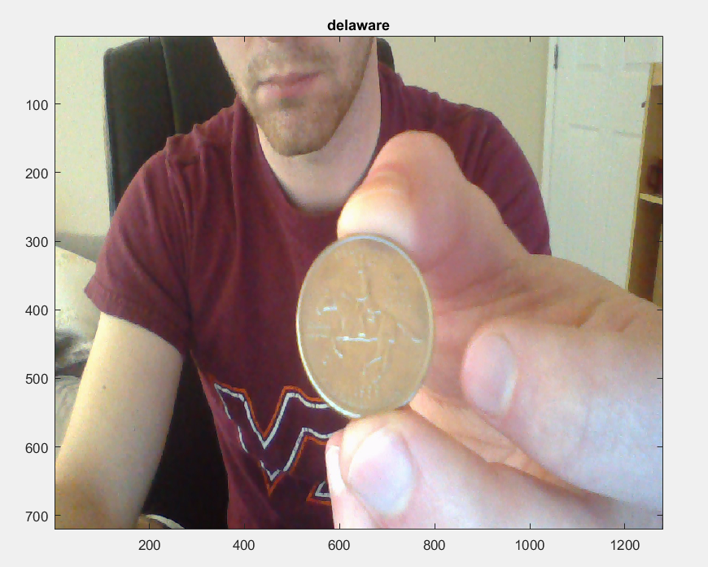
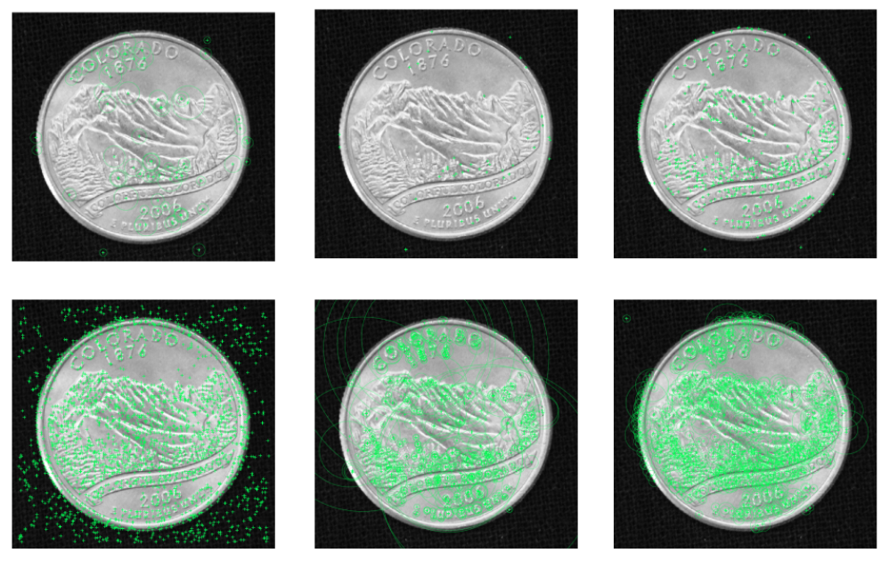
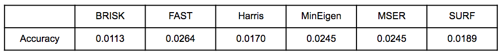
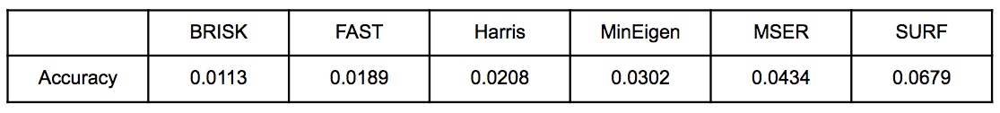
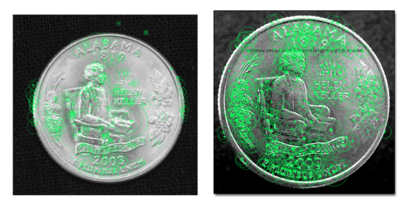
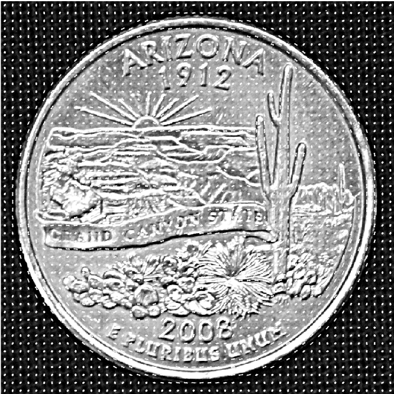
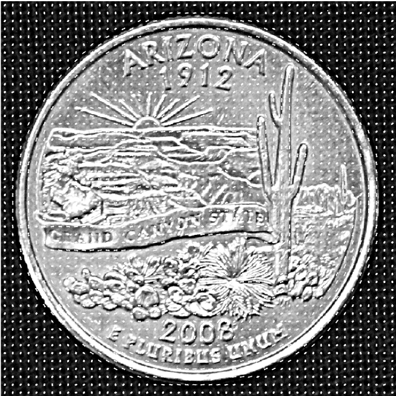

State Quarter Classification
Rob Lyerly, Walker Sensabaugh, Lauren WongFall 2016 ECE 5554/4554 Computer Vision: Final Project
Virginia Tech
Abstract
Our goal was to use MATLAB's functionality to build a program that could identify the state off of the back of a US state quarter given webcam streamed input.

Introduction
We were interested in the identification and classification of rare coins. To narrow the scope of the project and make it more accessible, we focussed on the identification and classification of state quarters. We took many approaches to this problem, as this turned out to be a much more difficult problem than we anticipated due to the shape and smoothness of the quarter, the reflective surface of the quarter, and the difference in wear of different quarters. We describe our different approaches below.Previous approaches to coin identification mainly focussed on the use of machine learning. One popular approach is variations on a rotation invariant neural network that takes in the values of the image, made invariant either by some preprocessing step or using a backpropogation algorithm. However, this can be a slow method in a real-time situation due to the need to feed the entire image into the neural net. Fourier Transforms have been used as a filtering method to decrease complexity and speed up this process.
Another relatively successful approach utilizes image matching, matching SIFT descriptors of the images of unknown coins to a database of SIFT descriptors for known coin images. This is most similar to our first approach.
A few other approaches we came accross were gradient based and utilized eigenspaces.
Data
We created our own database of 106 images, two of each quarter (the back of each state quarter, the front of the state quarter, front and back of the standard quarter), in two different lighting situations taken on a black background. We also sourced ten images of each quarter from the internet (a total of 530 images).Approach
Approach #1
Our initial approach was to extract sets of features from each of the images in our database, store these, and then extract features from each of the quarters in our testing set and use the nearest neighbor algorithm to determine a match between each quarter in our test set and the quarters in our database. More specifically, our code perfomed the following steps:- Build a database of features for each of image in our handmade database. We tested 6 different kinds of features (BRISK, FAST, Harris, MinEigen, MSER, and SURF) to determine the most effective for use on our images. Features were extracted using MATLAB's built in functions.
- For each image in our internet sourced set, we extract features (using MATLAB's built in functions), and determine the nearest neighbor in the database using MATLAB's built in matchFeatures() function.
- Display match and determine accuracy.
- Converting the images from the RGB colorspace to grayscale and normalizing the color scale before extracting features. This improved our results minimally.
- Binarizing the images before extracting features. This did not improve our results.
- Applying a sharpening filter to the images before extracting features. This also improved our results minimally.
- Masking out the background and edge of the quarter so as to only extract features from the image on the quarter. This did not improve our results.
- Building a spatial pyramid model. This did not improve our results.
Approach #2
Our second approach yielded much better results. First, HOG features were extracted from the images we sourced from the internet. To do this, we made use of MATLAB's built in extractHOGFeatures() function. All grayscale images were resized to 800x800 and a HOG cell size of 16x16 was used to give the same number of features for each image. We then trained an SVM classifier on these features using MATLAB's built in fitcecoc() function. The classifier was then tested on HOG features extracted from the database we created.Additionally, we found that masking out the background greatly improved our results. This was done by detecting the edges of the quarter, finding the min and max rows and columns of the edges, and cropping the image at those rows and columns. The image was then resized back to 800x800 to maintain the number of HOG features for each image.
Experiments and Results
Experiment #1 - Feature Extraction and Nearest Neighbor Classification
6 different features were tested (top row BRISK, FAST, and Harris; bottom row Minimum Eigenvalue, MSER, and SURF):

Our initial results (presented at the poster presentation):

Accuracy was calculated by the number of quarters the algorithm accurately classified divided by the total number of images tested (in this case 530). As a point of reference, if the classifier were to guess randomly, it would get 0.0188 accurate.
Soon after the presentation, we discovered an error in our code that had hindered the performance of our algorithm and had skewed the results. The matchFeatures() function in MATLAB returns a set of matched points and a set of distances for those matches. We had been selecting our classification by the average distance when we should have been selecting our classification by the number of matched points. Fixing this small error gave us the results below.
Corrected results:

Though our accuracy was still very low, the corrected finding that the SURF detector was most effective was what we were expecting, as we know SURF to be the most robust to many kinds of image transformations.
Because the coin is a flat and shiny reflective surface, it is highly responsive to changes in the lighting intensity and position. Additionally, many quarters from the same state have different wear and imperfections. This lent itself to the detectors finding very different features for the same quarter under different conditions. We found this to be the biggest challenge to classifying quarters using this method.

Experiment #2 - HOG Feature Extraction and SVM Classification
First, an SVM was trained on 531 images - 10 images for each state, plus 10 for a non-state quarter back and 21 for the front of all state quarters. The multi-class SVM was then used to classify state quarter images. For example, the Arizona test image and the extracted HOG features are shown below: 

Again, accuracy was calculated by the number of quarters accurately classified divided by the number of quarters tested (in this case 53).
Accuracy with background - 0.2641
Accuracy without background - 0.3207
The SVM classifier has a much better success rate than the feature matching classifier, but still struggles to identify quarters. The classifier tends to predict Texas (34% of all predictions) and New York (15% of all predictions) when the SVM cannot pick out image shapes from the HOG features on the quarters. More training data would help alleviate this problem.
Conclusion and Future Work
The results from the approaches described above indicate that although using traditional image features can provide some a minimal level of detecting state quarters, there is much room for improvement. State quarters have very fine spatial features, meaning very high resolution images with fine-grained features are required to accurately detect the state. Even with a fairly large corpus of training examples, an SVM classifier using HOG features was only able to get up to a 32% accuracy. More quarter examples would have helped improve the accuracy.Future work would involve using state-of-the-art machine learning methods such as convolutional neural networks to automatically train and detect state quarters. A CNN would require a substantially larger corpus, although extra training samples could be generated from the current corpus (e.g., by rotating images, scaling, etc.).
Code
Follow this link to see the code.References
Fukumi, Minoru, et al. "Rotation-invariant neural pattern recognition system with application to coin recognition." IEEE Transactions on neural networks 3.2 (1992): 272-279.Zambanini, Sebastian, and Martin Kampel. "Automatic coin classification by image matching." Proceedings of the 12th International conference on Virtual Reality, Archaeology and Cultural Heritage. Eurographics Association, 2011.